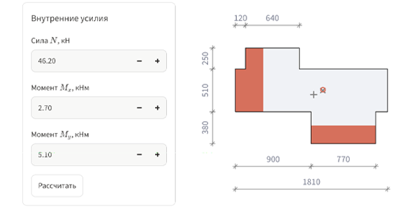
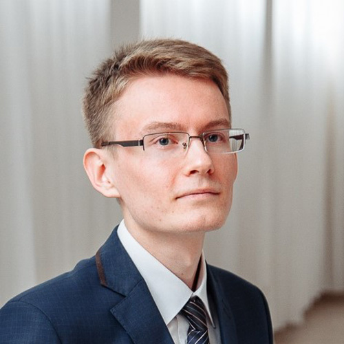

Моделирование физически нелинейных процессов в строительных конструкциях

На встрече мы расскажем о направлениях деятельности кружка и планах работы на следующий год. Время и место сообщим позднее, пройдите регистрацию, мы пришлем вам уведомление.
Изучаем, как реальные строительные материалы и конструкции ведут себя за пределами линейной упругости. Пишем код, ставим реальные и численные эксперименты, делаем доклады и публикуем статьи. Деятельность кружка будет наиболее интересна студентам следующих направлений:
- 08.03.01 «Строительство» (бакалавриат) 3-4 курс
- 08.04.01 «Строительство» (магистратура) 1-2 курс
- 08.05.01 «Строительство уникальных зданий и сооружений» (специалитет) 3-6 курс
Научная деятельность
На данный момент кружок занимается исследовательскими работами в области физической нелинейности строительных конструкций из каменных кладок.
План работ
Октябрь 2026
Нижегородский фестиваль науки
3 декабря 2026
Открытая встреча со студентами
Апрель 2027
II конференция им. В.В. Найденко, Нижний Новгород
Май 2027
X Международный симпозиум (APSCSE-2027), Красноярск
Сентябрь 2027
XV конференция «Золотовские чтения», Москва

Численное моделирование

Разработка инженерных калькуляторов

Базы данных и машинное обучение

Экспериментальная работа
Образовательная деятельность
В 2027 году планируется проведение серии образовательных мероприятий, которые помогут студентам освоить необходимые навыки для работы в кружке.
terminal
Основы Python
Расскажем основы языка и рассмотрим наиболее популярные библиотеки для выполнения инженерных расчетов и визуализации, такие как NumPy, Matplotlib и другие.
shape_line
Основы МКЭ
Напишем собственную программу для расчета простой стержневой конструкции и визуализируем результаты расчета с помощью Python и библиотек.
line_axis
Физическая нелинейность
Освоим базовые понятия теории пластичности, а также положения, лежащие в основе нелинейной деформационной модели железобетона и каменной кладки.
Руководитель и преподаватели
Руководитель кружка и преподаватели являются сотрудниками кафедр «Железобетонные, каменные и деревянные конструкции», «Теория сооружений и техническая механика» ННГАСУ, а также инженерами-исследователями ГК «SCAD Soft».

Максим Леонидович Поздеев
руководитель кружка, канд. техн. наук, ст. преп. каф. ЖБКиДК ННГАСУ, инженер-исследователь ГК «SCAD Soft»

Илья Васильевич Смагин
преподаватель кружка, аспирант, ассистент каф. ТСиТМ ННГАСУ, инженер-исследователь ГК «SCAD Soft»
Участники
В работе кружка участвуют студенты ННГАСУ, которые проявляют интерес к исследовательской деятельности в области физической нелинейности строительных конструкций. Также для выполнения отдельных задач кружка привлекаются студенты, занимающиеся разработкой программных средств.
| Члены кружка | Участие | Тезисы РИНЦ | Статьи ВАК |
|---|---|---|---|
| Сергей Максимович Колос | 2025 – н. вр. | ||
| Степан Юрьевич Королев | 2025 – н. вр. | 1 | |
| Иван Дмитриевич Молодцов | 2025 – н. вр. | ||
| Валерия Игоревна Пестрикова | 2025 – н. вр. | 1 | |
| Никита Сергеевич Пироговский | 2025 – н. вр. | 1 | |
| Андрей Эдуардович Романов | 2025 – н. вр. | 1 |
Публикации
Вопросы
Наиболее комфортно будет с 3 курса бакалавриата или специалитета, но можно начать со 2 курса. Главное – желание и интерес к теме.
Ориентировочно несколько часов в неделю: занятия курсов плюс самостоятельная работа над своей темой. Нагрузку можно согласовать с руководителем.
Опыт исследовательской работы, выступления на конференциях, публикации. Надинженерные навыки: программирование, численные методы, экспериментальная работа. За научную деятельность студент ННГАСУ также вправе претендовать на получение повышенной академической стипендии: см. информацию.
Нет, но такие знания приветствуются. Курсы внутри кружка: «Основы Python» и «Основы МКЭ» рассчитаны на студентов, закончивших 2-3 курс бакалавриата или специалитета.
Тематика кружка связана с научной деятельностью руководителя, занимающегося вопросами физической нелинейности применительно к каменной кладке: см. диссертацию. Но в рамках кружка можно заниматься и другими темами, связанными с физической нелинейностью строительных конструкций. Также вы можете посещать образовательные мероприятия кружка, не участвуя в исследовательской деятельности.